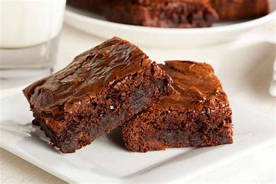
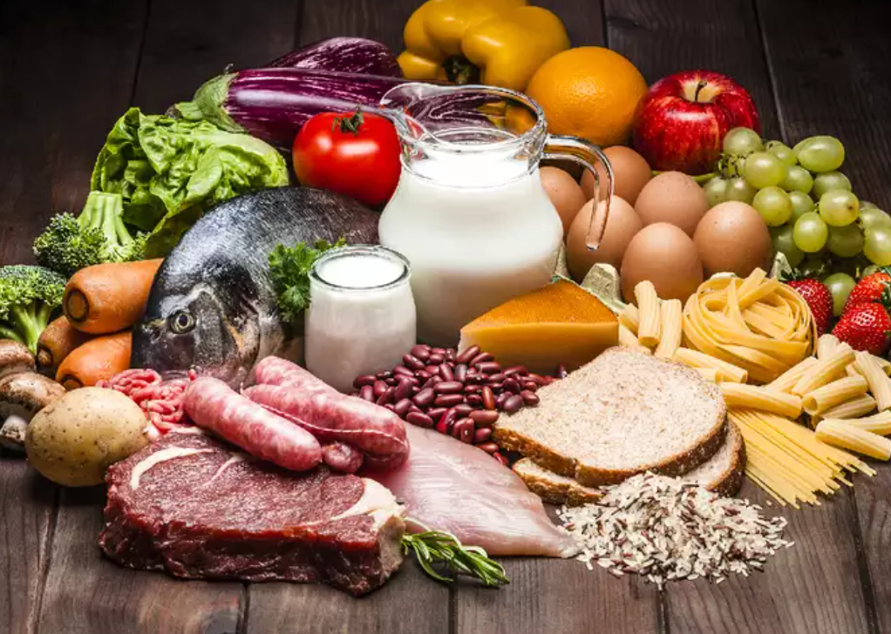
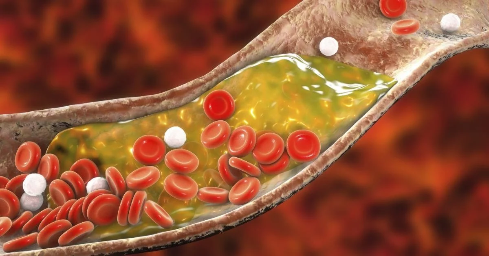
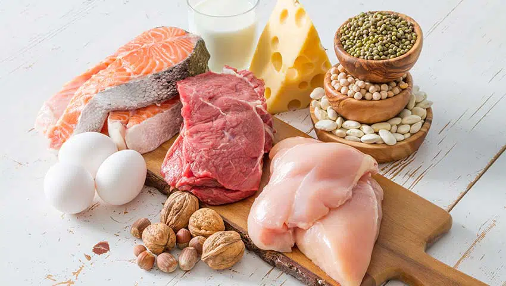

A melhor receita de Brownie você encontra aqui!

- As pitadas de sal servem para realçar o sabor do chocolate: não deixe de usá-las!
- Misture a farinha delicadamente para que a massa não fique pesada.
- Usar a forma de metal faz com que o brownie fique pronto mais rapidamente. Se utilizá-la, fique de olho no tempo de forno.
- Adicione castanha e nozes a gosto na massa para um sabor ainda mais marcante!
| Informação nutricional | |||||
|---|---|---|---|---|---|
| Gorduras Totais | Colesterol | Sódio | Potássio | Carboidratos | Proteínas |
| 29 g | 73 mg | 343 mg | 176 mg | 50 g | 6 g |
|  |  |  | |||